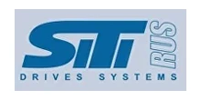

Поставляем оригинальные редукторы и мотор-редукторы SITI под заказ + изготовим аналог дешевле. Замена по присоединительным размерам — без переделки оборудования. Цена и срок — по запросу.
Оригинальные редукторы и мотор-редукторы SITI — под заказ, с гарантией производителя. Пришлите модель или шильд — сообщим цену и срок. Нужно дешевле — изготовим аналог (см. ниже).
| Серия SITI | Типоразмеры (поставляем оригинал) |
|---|---|
| MU / I — червячные | MU40, MU50, MU63, MU75, MU90, MU110, MU130 |
| BL / HL — соосно-цилиндрические | BL, HL (по запросу) |
| NHL — коническо-цилиндрические | NHL (по запросу) |
| MNHL — с предступенью | MNHL (по запросу) |
| Двигатели в сборе | IEC 63…250 (по запросу) |
Цена и наличие оригинала — по запросу. Не оферта.
Заменяем червячные мотор-редукторы SITI на аналоги собственного производства (серии Ч, 2Ч, МЧ, МЧ2). Узел встаёт на штатное место по присоединительным и габаритным размерам — переходные фланцы и спецвалы изготавливаем по вашим чертежам.

| Заменяем серии SITI | MU, MI, PD, MNHL, BH |
|---|---|
| Мощность двигателя | 0.06–200 кВт |
| Передаточное число | 3.77–16600 |
| Наш аналог | Редукторы серии ZR (червячные, плоские цилиндрические, соосные, конические) |
| Гарантия | 24 месяца |
| Срок | Отгрузка со склада от 3 дней, изготовление от 5 рабочих дней |
Совпадают присоединительные размеры, валы и фланцы — узел встаёт на штатное место.
Вдвое выше среднерыночной.
Отгрузка со склада от 3 дней — не ждать импорт месяцами.
Пришлите фото шильда или модель — подберём аналог за 15 минут.
Подбор по типоразмеру: каждой модели SITI соответствует наш редуктор серии ZR. Точную замену по вашей модели или шильду подтвердит инженер — пришлите шильд или опишите задачу.
| Модель SITI | Наш аналог |
|---|---|
| Червячные мотор-редукторы | |
| MU 30 | ZR 603 |
| MU 40 | ZR 604 |
| MU 50 | ZR 605 |
| MU 63 | ZR 606 |
| MU 75 | ZR 607 |
| MU 90 | ZR 609 |
| MU 110 | ZR 6010 |
| MI 30 | ZR 603 |
| MI 40 | ZR 604 |
| MI 50 | ZR 605 |
| MI 60 | ZR 606 |
| MI 70 | ZR 607 |
| MI 80, MI 90 | ZR 609 |
| MI 110 | ZR 6010 |
| MI 130 | ZR 6013 |
| MI 150 | ZR 6015 |
| Плоские цилиндрические мотор-редукторы | |
| PD 63 | ZR 636 |
| PD 80 | ZR 646 |
| PD 100 | ZR 676 |
| PD 125 | ZR 686 |
| PD 160 | ZR 6106 |
| Соосные мотор-редукторы | |
| MNHL 25 | ZR 939 |
| MNHL 30 | ZR 949 |
| MNHL 35 | ZR 959, ZR 969 |
| MNHL 40 | ZR 979 |
| MNHL 50 | ZR 989 |
| MNHL 60 | ZR 999 |
| MNHL 70 | ZR 9109 |
| MNHL 90 | ZR 9139 |
| MNHL 100 | ZR 9149 |
| Конические мотор-редукторы | |
| BH 63 | ZR 838, ZR 848 |
| BH 80, 100 | ZR 878 |
| BH 125 | ZR 888 |
| BH 140 | ZR 898 |
| BH 160 | ZR 8108 |
| BH 180 | ZR 8128 |
| BH 200 | ZR 8158 |
Оставьте контакты или пришлите модель/шильд — инженер подберёт аналог, рассчитает присоединительные размеры и пришлёт КП.
Получить КПДа, поставляем оригинальные редукторы и мотор-редукторы SITI под заказ — с гарантией производителя. Пришлите модель или шильд, и мы сообщим срок поставки и цену по запросу. Если нужно быстрее или дешевле — изготовим аналог собственного производства с отгрузкой от 3 рабочих дней.
Наш аналог червячных мотор-редукторов SITI серии MU повторяет присоединительные и габаритные размеры оригинала, поэтому встаёт на штатное место без переделки оборудования. Отличие — в цене (аналог дешевле) и сроке (отгрузка от 3 дней вместо ожидания импорта), при гарантии 24 месяца.
Пришлите фото шильда или укажите модель SITI (например MU, BL, HL, NHL) — инженер подберёт аналог за 15 минут по таблице соответствия SITI → ZR и подтвердит присоединительные размеры. При необходимости изготовим переходные фланцы и спецвалы по вашим чертежам.
Цена на оригинал SITI и на аналог рассчитывается по запросу — она зависит от серии, типоразмера, передаточного числа и комплектации двигателя. Оставьте заявку с моделью или шильдом, и мы пришлём коммерческое предложение с ценой и сроком.
Хотите SITI купить в России без долгого ожидания импорта? Завод Редукторов поставляет оригинальный SITI редуктор под заказ и изготавливает аналог SITI дешевле — с заменой по присоединительным размерам. Червячные мотор-редукторы серии MU, а также BL, HL и NHL встают на штатное место без переделки оборудования. Цена и срок — по запросу.
Итальянская компания SITI выпускает червячные мотор-редукторы серии MU (и совместимую линейку MI), плоские цилиндрические PD, соосно-цилиндрические BL и HL, а также коническо-цилиндрические NHL и MNHL. На российском рынке оригинальные узлы SITI остаются востребованными, но сроки поставки и цена импорта часто не устраивают производство — поэтому мы предлагаем два пути: оригинал под заказ либо аналог собственного производства серии ZR.
Поставляем оригинальные редукторы и мотор-редукторы SITI серий MU, MI, BL, HL, NHL и MNHL с гарантией производителя. Достаточно прислать модель или фото шильда — мы подтвердим наличие, рассчитаем срок и цену по запросу. Подробнее о программе замены импортных редукторов — на странице импортозамещение.
Если нужен бюджетный или срочный вариант, изготовим аналог SITI серии ZR по присоединительным и габаритным размерам оригинала. Узел встаёт на штатное место — переходные фланцы и спецвалы делаем по вашим чертежам, гарантия 24 месяца, отгрузка от 3 рабочих дней. Подобрать замену по модели или шильду можно через форму подбора редуктора.
| Серии | MU, BL/HL, NHL |
|---|---|
| Поставка | Оригинал под заказ + аналог собственного производства |
| Цена | По запросу |
| Подбор | По модели и шильду |